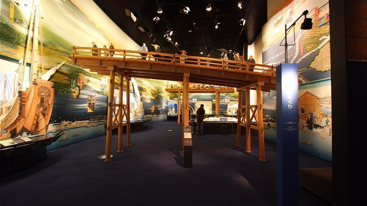

Osaka Museum of History
大阪歴史博物館
The Osaka Museum of History (大阪歴史博物館, Ōsaka Rekishi Hakubutsukan) opened in 2003 in a tall building next to NHK Osaka and just across the street from Osaka Castle. The building offers excellent views of the castle from its top floors.
The museum exhibits are visually oriented with several large models. They chronicle the city's history, beginning in ancient times when Osaka served as Japan's first capital and site of the Naniwa Palace and ending with exhibits on the city's bustling shopping arcades of the early Showa Period.
The museum's collection is set up on the upper floors of the building while the lower floors are occupied by a restaurant, shop and spacious lobby. Museum visitors first take the elevator to the top floor and then follow the exhibition route down.
